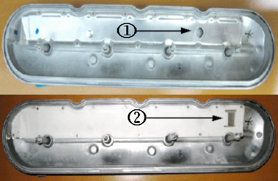
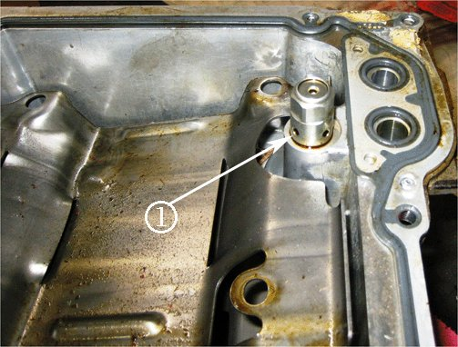
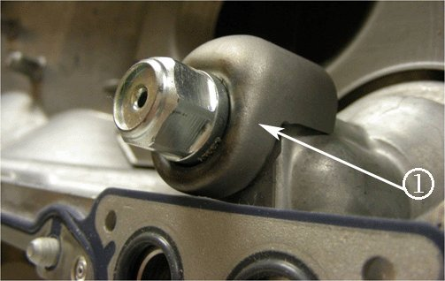
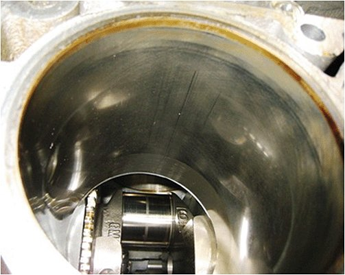
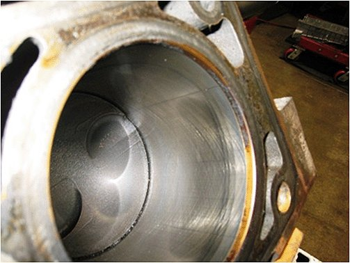
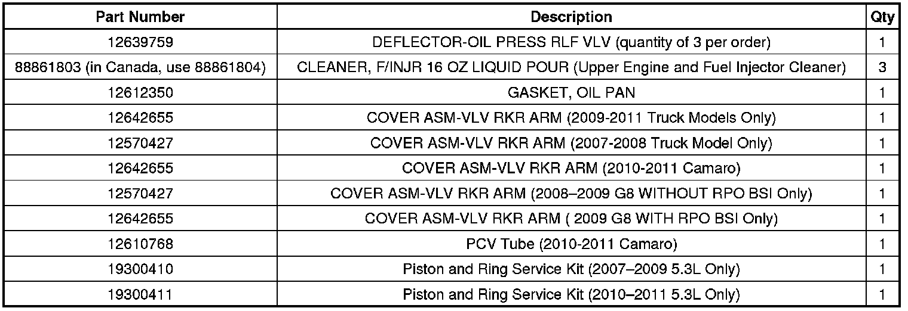
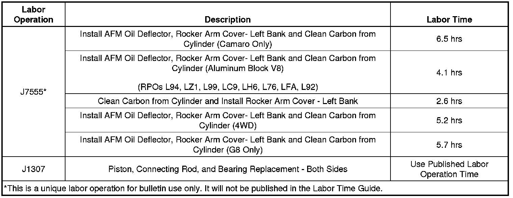

Engine - Oil Consumption on Aluminum/Iron Block Engines
TECHNICALBulletin No.: 10-06-01-008I
Date: February 19, 2013
Subject: Engine Oil Consumption on Aluminum Block/Iron Block Engines with Active Fuel Management (AFM) (Install AFM Oil Deflector and Clean Carbon from Cylinder and/or Install Updated Valve Cover)
Models:
2007-2011 Cadillac Escalade Models
2007-2011 Chevrolet Avalanche, Silverado 1500, Suburban, Tahoe
2010-2011 Chevrolet Camaro
2007-2011 GMC Sierra 1500, Sierra Denali, Yukon Models
2008-2009 Pontiac G8 GT
Built Prior to February 1, 2011 (Updated Valve Cover) and October 2010 (AFM Shield)
Equipped with Any of the Following Engines:
-Aluminum Block V8 Engine with Active Fuel Management (AFM) (RPOs L94, LZ1, L99, LC9, LH6, L76, L92, LFA (Hybrid))
-Iron Block V8 Engine with Active Fuel Management (AFM) (RPOs LMG, LY5)
Attention:
This bulletin does not apply to the Buick Rainier, Chevrolet TrailBlazer and GMC Envoy equipped with LH6 due to a different design oil pan and AFM pressure relief valve.
Supercede:
This bulletin is being revised to update the Warranty Information. Please discard Corporate Bulletin Number 10-06-01-008H (Section 06 - Engine/Propulsion System).
Condition
Some customers may comment about engine oil consumption of vehicles with higher mileage (approximately 48,000 to 64,000 km (30,000 to 40,000 mi) and a service engine soon light being on and/or rough running engine. Verify that the PCV system is functioning properly. If the customer understands that some oil consumption is normal and still feels the consumption level is excessive, more than 1 quart per 2000 to 3000 miles of driving, perform the service indicated in this bulletin. It is no longer necessary to have the customer return multiple times to have the usage verified.
Cause
This condition may be caused by two conditions. Oil pulled through the PCV system or oil spray that is discharged from the AFM pressure relief valve within the crankcase. Under most driving conditions and drive cycles, the discharged oil does not cause a problem. Under certain drive cycles (extended high engine speed operation), in combination with parts at the high end of their tolerance specification, the oil spray quantity may be more than usual, resulting in excessive deposit formation in the piston ring grooves, causing increased oil consumption and cracked or fouled spark plugs (#1 and/or #7). Refer to the latest version of Corporate Bulletin Number 12-06-01-001.
Correction
Aluminum or Cast Iron Block - Oil in Intake Manifold - Install Updated Valve Cover on All Models Built Prior to February 1, 2011
Note
If vehicle is built after this breakpoint, it should already be equipped with this updated valve cover.

1) Old Design
2) New Design
PCV pullover or an overactive lifter can cause oil to be pulled through the PCV system even at low vehicle mileage. A correctly functioning PCV system will only leave a film of oil in the intake manifold. Inspect the intake manifold to see if there is any oil puddling in the bottom. If there is you will need to replace the left valve cover. Two new left rocker arm covers have been released for trucks and vans. Technicians should replace the left rocker arm cover with GM P/N 12570427 for 2007-2008 or GM P/N 12642655 for 2009-2011. Refer to the Parts Information below for the Camaro. This rocker arm cover has a relocated PCV drain hole that prevents oil from entering the intake manifold. Refer to Valve Rocker Arm Cover Replacement - Left Side in SI.
Note
These rocker covers are for specific years. The PCV orifice is different for each. The correct cover must be used or an SES light may set.
Aluminum Block - Oil Getting Past Piston Rings - Free Up Piston Rings and Install AFM Shield on All Non-Hybrid Models Built Prior to October 1, 2010 or all Hybrid Models Built July 7, 2009 - October 1, 2010
Note
If vehicle is built outside of this breakpoint, it should already be equipped with this AFM shield or the pan does not have an AFM valve (LFA before July 7, 2009).
To correct this condition, install an AFM shield, perform the piston cleaning procedure as described in this document and install a new oil pan gasket per the procedure outlined in this document. Monitor oil consumption after this repair to ensure oil consumption has improved to acceptable levels.
If this repair does not correct the condition, it may be necessary to replace all of the piston assemblies (piston and rings) with new parts. Refer to SI for repair procedure.
Important
It is critical in this cleaning process that the engine/fuel injector cleaner remain in the cylinders for a minimum of 2.5 hours to fully clean the components. The cleaner solution must be removed before a maximum of three hours.
1. Remove the spark plugs and ensure that none of the pistons are at top dead center (TDC).
2. Clean the pistons by putting 118-147 ml (4-5 oz) of Upper Engine and Fuel Injector Cleaner, GM P/N 88861803 (in Canada, use 88861804), in each cylinder. Allow the material to soak for at least 2.5-3.0 hours, but no more than three hours and then remove the cleaner. A suggested method of removing the cleaner is cranking the engine over. Make sure to unplug the ignition coils and fuel injector before cranking the engine over. Also make sure that the painted surfaces are covered so no damage is done.
3. Remove the oil pan. Refer to Oil Pan Replacement in SI.

4. Remove the AFM valve (1).

5. Install the new shield (1), GM P/N 12639759, and tighten the AFM valve to the oil pan to 28 Nm (20 lb ft).
Important
Ensure that the engine cleaner is thoroughly removed before reinstalling the spark plugs. Failure to do so may result in a hydro-lock condition.
6. Reinstall the spark plugs. Replace the spark plugs if necessary due to full of carbon. Refer to the parts catalog.
7. Reinstall the oil pan. Refer to the Oil Pan Installation procedure in SI. Replace the oil pan gasket if necessary. Refer to the parts catalog. Replace the engine oil.
8. Re-evaluate the oil consumption. Document on the repair order. If the oil consumption is still greater than 0.946 L (1 qt) in 3,200 km (2000 mi), replacement of the pistons and rings will be required.
Important
Some minor scratches may be noticed on the cylinder walls during piston and ring replacement. If the scratch cannot be felt when running your finger nail over it, the scratch is considered normal wear and the block or engine should not be replaced.
Note
It is not necessary to hone or deglaze the cylinder walls. Honing may induce unnecessary cylinder wall and / or piston ring damage if it is done incorrectly and/or not cleaned thoroughly. Cylinder walls should cleaned thoroughly with brake cleaner before installation of the new pistons and rings. Numerous engines replaced for oil consumption have been inspected. The cross hatch has been consistently good and is in specification. As a result, is should not be necessary to measure the cylinders if they pass the visual inspection.
Note
After the piston/ring replacement it will take 2000-3000 mi. for the new rings to seat. Adequate break time is necessary prior to rechecking the oil consumption level.
Note
Do not overlook the valve seals at higher mileage. Look in the head ports for evidence of excessive amounts of oil getting past the seals.
Note
It is recommended to install an AFM shield any time that the oil pan is removed for any reason and an AFM shield is not found.
Cast-Iron Block - Oil Getting Past Piston Rings - Free Up Piston Rings on All Models Built Prior to October 1, 2010
1. Remove the spark plugs and ensure that none of the pistons are at top dead center (TDC).
2. Clean the pistons by putting 118-147 ml (4-5 oz) of Upper Engine and Fuel Injector Cleaner, GM P/N 88861803 (in Canada, use 88861804), in each cylinder. Allow the material to soak for at least 2.5-3.0 hours, but no more than three hours and then remove the cleaner. A suggested method of removing the cleaner is cranking the engine over. Make sure to unplug the ignition coils and fuel injector before cranking the engine over. Also make sure that the painted surfaces are covered so no damage is done.
Important
Ensure that the engine cleaner is thoroughly removed before reinstalling the spark plugs. Failure to do so may result in a hydro-lock condition.
3. Reinstall the spark plugs. Replace the spark plugs if necessary due to full of carbon. Refer to the parts catalog.
4. Re-evaluate the oil consumption. Document on the repair order. If the oil consumption is still greater than 0.946 L (1 qt) in 3,200 km (2000 mi), replacement of the pistons and rings will be required.
Note
It is not necessary to install the shield when doing the piston cleaning on a cast iron block engine since the cast iron block engine uses a different oil pump than an aluminum block engine, which results in a higher engine speed before the AFM pressure relief valve opens (cast iron block engines are less prone to the AFM oil spray condition described earlier). If you find it necessary to replace the pistons and/or remove the oil pan for any other reason, only then should you add the shield.


Important
Some minor scratches may be noticed on the cylinder walls during piston and ring replacement. If the scratch cannot be felt when running your finger nail over it, the scratch is considered normal wear and the block or engine should not be replaced.
Note
It is not necessary to hone or deglaze the cylinder walls. Honing may induce unnecessary cylinder wall and / or piston ring damage if it is done incorrectly and/or not cleaned thoroughly. Cylinder walls should cleaned thoroughly with brake cleaner before installation of the new pistons and rings. Numerous engines replaced for oil consumption have been inspected. The cross hatch has been consistently good and is in specification. As a result, is should not be necessary to measure the cylinders if they pass the visual inspection.
Note
After the piston/ring replacement, it will take 2000-3000 miles for the new rings to seat. Adequate break time is necessary prior to rechecking the oil consumption level.
Note
Do not overlook the valve seals at higher mileage. Look in the head ports for evidence of excessive amounts of oil getting past the seals.
Note
It is recommended to install an AFM shield any time that the oil pan is removed for any reason and an AFM shield is not found.
Parts Information

Warranty Information

For vehicles repaired under the U.S. (5 years/100,000 miles) or Canadian (5 years/160,000 km) Powertrain Warranty, use the table.

Disclaimer